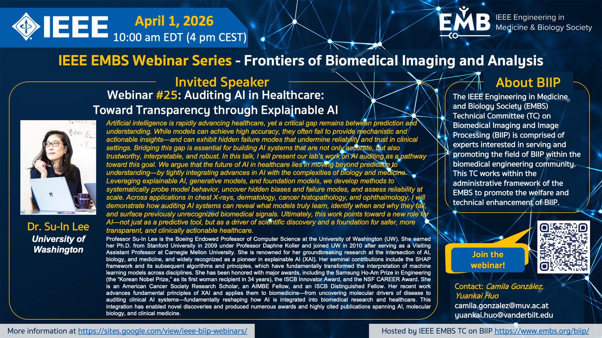

In the IEEE EMBS Frontiers of Biomedical Imaging and Analysis Webinar Series co-hosted by Camila and Yuankai Huo (Vanderbilt), Dr. Su-In Lee (University of Washington) presented her lab's work on auditing AI systems to uncover hidden biases and failure modes, advancing transparency, reliability, and trust in clinical AI.